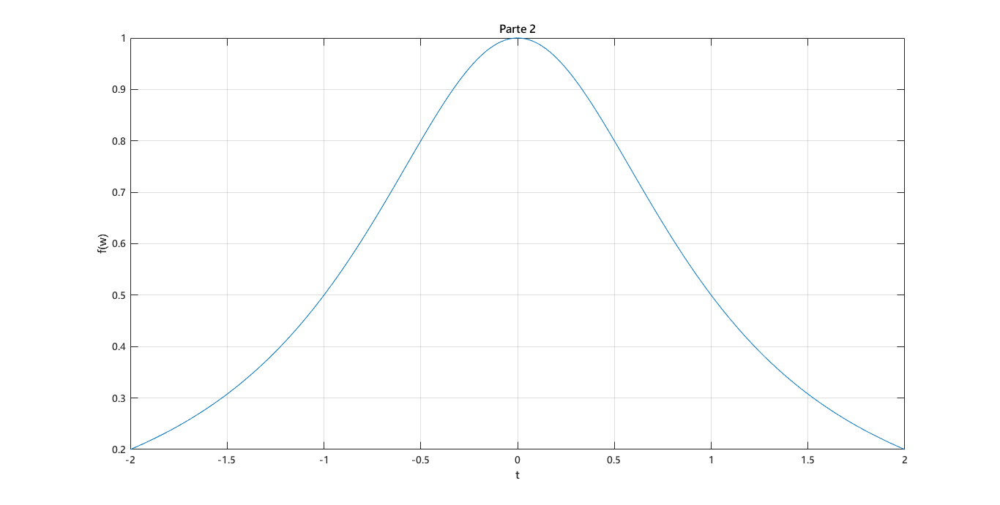
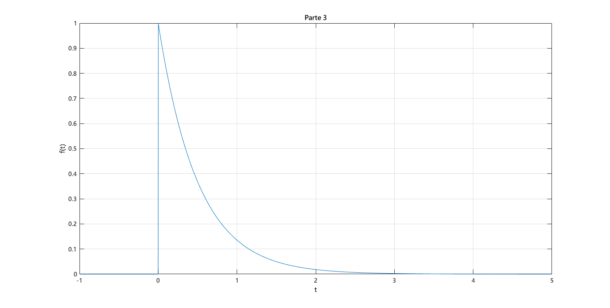
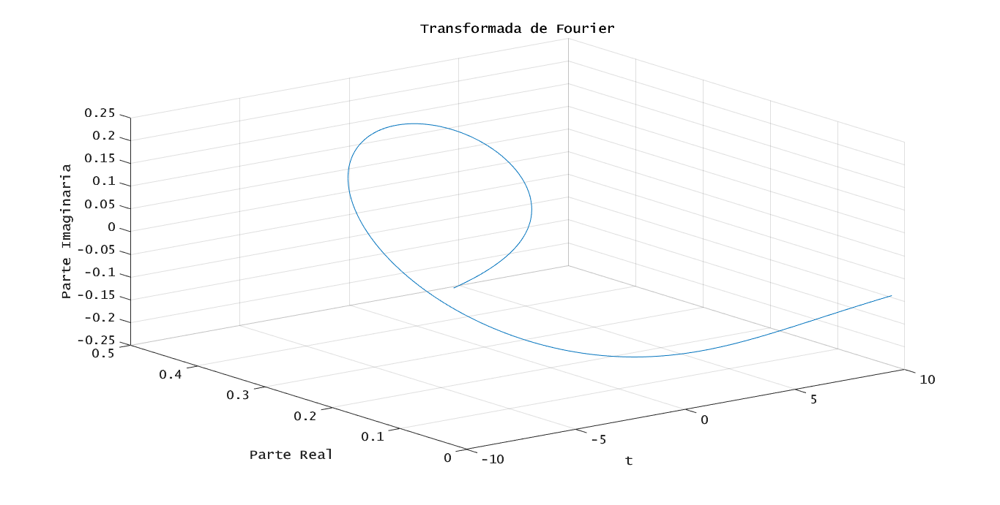
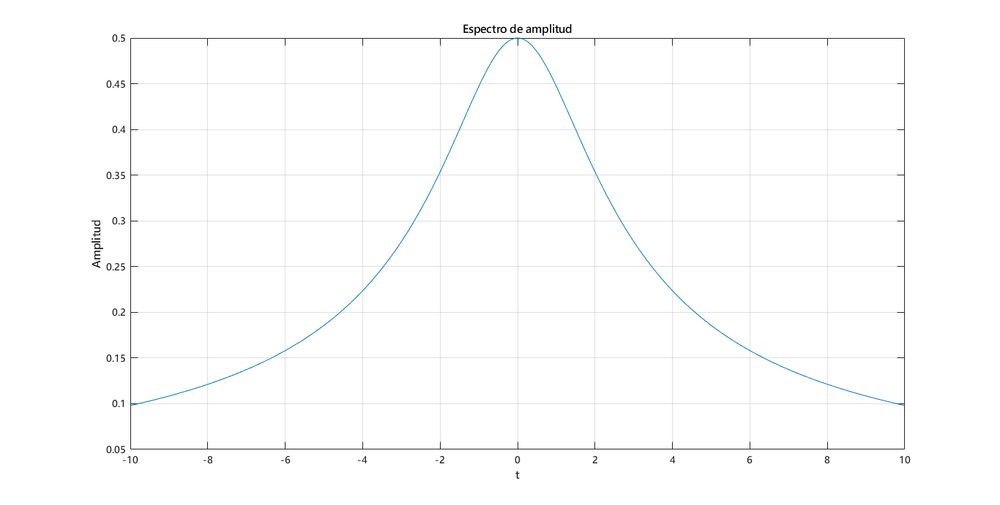
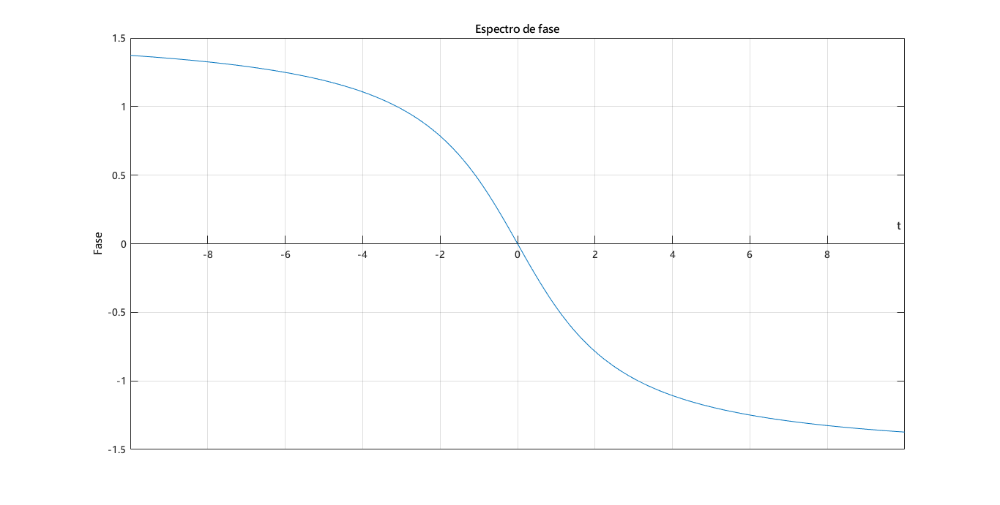
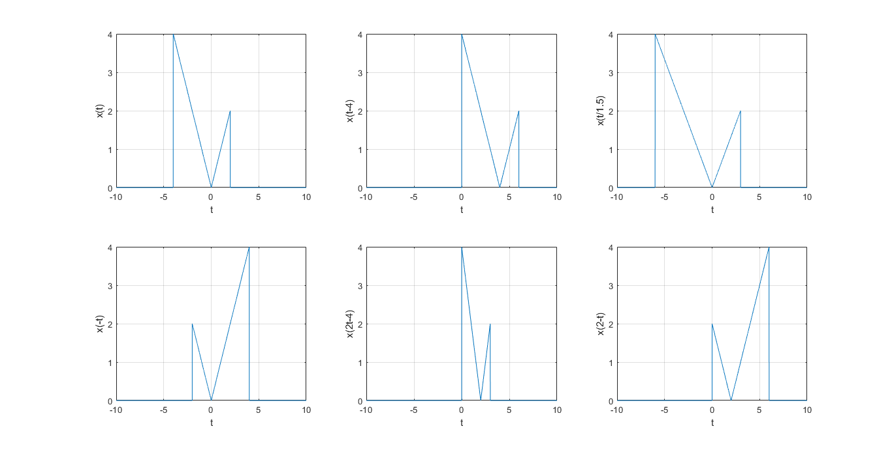

Práctica 2: Señales en tiempo continuo
Quijano Gutiérrez Luis Humberto
Contents
Objetivos
- Manipulación básica de MATLAB
- Gráficas de señales reales y complejas continuas
- Transformación de señales continuas (escalamiento y traslación)
- Calculo de energía y potencia de señales continuas
Introducción
MATLAB signifca MATrix LABoratory, y es un software para realizar calculos númericos y simbólicos. Nace debido a una necesidad de un software de calculo avanzado y que no sea tan complicado de usar. La primera versión de MATLAB fue desarrolada por Cleve Moler en FORTRAN. Despues se implementaron algoritmos matriciales mediante LINKSPACE y EISPACK, quienes desarrollaron el lenguaje de promgramación M en los años '70. La versión actual de MATLAB fue desarrollada en C por The Mathworks, quienes de igual forma lo distribuyen.
Ya que MATLAB es un programa que necesita una lincencia para su uso, existen alternativas de software libre. Una de esas es Octave, el cual es un lenguaje para realizar e interpretar cálculos numéricos. Es de cierta forma compatible con MatLab, ya que puede leer el lenguaje M. Es un software libre bajo la licencia de GNU. En el siguiente enlace se muestra la documentación de Octave, así como algunos ejemplos proporcionados por la página de Octave. Aquí tambien de encuentran ejemplos de Octave: Ejemplos
Otro software libre es Python. Es un lenguaje de programación independiente orientado a objetos a base de scripting. Es un lenguaje interpretado, lo que significa que no se necesita compilar el código fuente para ejecutarse. Es un software que te permite crear todo tipo de programas, desde apps hasta páginas web. Contiene una gran cantidad de librerías, tipos de datos y funciones incorporadas en el mismo lenguaje. En el siguiente enlace encontraras una guía para principiantes: Python
Problema 1
function [fw] = fun1(w,a) fw=a/(a^2+w^2); end
Problema 2
RtoR('Parte 2', 'f(w)', w, f);

Problema 3




Problema 4 M1.1
% t=-2:2; t= -2:.01:2; f=@(t) exp(-t).*cos(2*pi*t); plot(t,f(t)); xlabel('t'); ylabel('f(t)'); grid;
Problema 4 M1.2
%t=-2:2; t=-2:.001:2; u=@(t) t>=0; plot(t,u(t)); xlabel('t'); ylabel('u(t)'); grid on; axis ([-2 2 -0.1 1.1]); p=@(t) t>=0 & t<1; plot(t,p(t)); xlabel('t'); ylabel('p(t) = u(t)-u(t-1)'); grid on; axis ([-1 2 -.1 1.1]);
Problema 4 M1.3
t=-2:.001:2; g=@(t) exp(-t).*cos(2*pi*t).*(t>=0); subplot(2,2,1) plot(t,g(t)); xlabel('t'); ylabel('g(t)'); grid on; subplot(2,2,2) plot(t,g(2*t+1)); xlabel('t'); ylabel('g(2t+1)'); grid on; subplot(2,2,3) plot(t,g(-t+1)); xlabel('t'); ylabel('g(-t+1)'); grid; subplot(2,2,4) plot(t,g(2*t+1)+g(-t+1)); xlabel('t'); ylabel('h(t) = g(2*t+1)+g(-t+1)'); grid;
Problema 4 M1.4
% dt=0.001; % t=0:dt:1; % x=@(t) exp(-t).*((t>=0)&(t<1)); % E_x=sum(x(t).*x(t)*dt); % % x_squared=@(t) exp(-2*t); % Ex=integral(x_squared,0,1); t=0:0.001:100; g_squared=@(t) exp(-2*t).*(cos(2*pi*t).^2); E_g=sum(g_squared(t)*0.001) Eg=integral(g_squared,0,100)
Problema 5
t=-10:0.001:10; x=@(t) -t.*((t>=-4)&(t<=0)) + t.*((t>0)&(t<=2)); subplot(2,3,1) plot(t,x(t)) xlabel('t'); ylabel('x(t)'); grid on; subplot(2,3,2) plot(t,x(t-4)) xlabel('t'); ylabel('x(t-4)'); grid on; subplot(2,3,3) plot(t,x(t/1.5)) xlabel('t'); ylabel('x(t/1.5)'); grid on; subplot(2,3,4) plot(t,x(-t)) xlabel('t'); ylabel('x(-t)'); grid on; subplot(2,3,5) plot(t,x(2*t-4)) xlabel('t'); ylabel('x(2t-4)'); grid on; subplot(2,3,6) plot(t,x(2-t)) xlabel('t'); ylabel('x(2-t)'); grid on;

Problema 6
function [Ex] = energia(X) A=isa(X,'function_handle'); if A == 1 Ex=integral(X,-inf,inf); else Ex=int(X,-inf,inf); end end
Problema 1.1.3
t=-10:0.001:10; x1=@(t) 1*(0<=t & t<=2); y1=@(t) 1.*(0<=t & t<=1)-1.*(1<=t & t<=2); x2=@(t) sin(t).*(0<=t & t<=2*pi); y2=@(t) 1.*(0<=t & t<=2*pi); x3=@(t) sin(t).*(0<=t & t<=pi); y3=@(t) (0<=t & t<=pi); h1=@(t) (x1(t)+y1(t)).^2; energia(h1) h11=@(t) (x1(t)-y1(t)).^2; energia(h11) h2=@(t) (x2(t)+y2(t)).^2; energia(h2) h22=@(t) (x2(t)-y2(t)).^2; energia(h22) h3=@(t) (x3(t)+y3(t)).^2; energia(h3) h33=@(t) (x3(t)-y3(t)).^2; energia(h33)
ans =
4.0000
ans =
4.0000
ans =
9.4248
ans =
9.4248
ans =
8.7124
ans =
0.7124
Problema 7
function [Px] = potencia(X,t2,t1) A=isa(X,'function_handle'); if A == 1 p=@(t) (X(t)).^2; Px=(1/(t1-t2)).*(integral(p,t2,t1)); else syms tao; Px=limit((1/(2*tao)).*(int(X.^2,-tao,tao)),tao,inf); end end
Problema 1.1.4
t=-2:0.001:2;
syms c;
x=@(t) t.^3;
t1=max(t);
t2=min(t);
x1=@(t) -x(t);
x2=@(t) 2.*x(t);
x3=c.*x;
Potencia=potencia(x,t2,t1)
P1=potencia(x1,t2,t1)
RMS1=sqrt(P1)
P2=potencia(x2,t2,t1)
RMS2= sqrt(P2)
P3=potencia(x3,t2,t1)
RMS3=sqrt(P3)
Potencia =
9.1429
P1 =
9.1429
RMS1 =
3.0237
P2 =
36.5714
RMS2 =
6.0474
P3 =
piecewise(c == 0, 0, c ~= 0, Inf*c^2)
RMS3 =
piecewise(c == 0, 0, c ~= 0, Inf*(c^2)^(1/2))